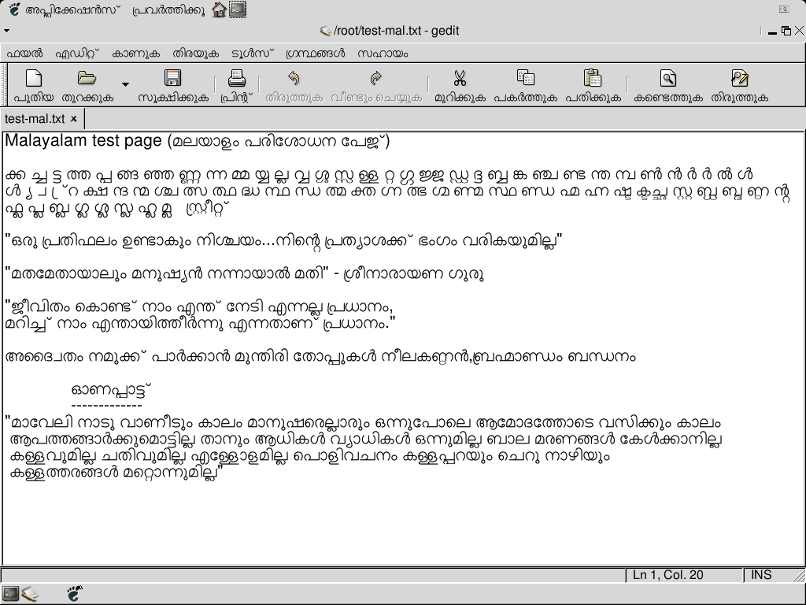

Here you can see some stuffs related to SMC Project,
these stuffs will be moved to the pages at Savannah.
These fonts are released under GPL, Now it is converting to OTF
AkrutiMal1Normal.sfd
AkrutiMal1Bold.sfd
AkrutiMal2Normal.sfd
AkrutiMal2Bold.sfd
indic-ot-class-tables.c diff to support MalOtf.ttf
This is not a good patch, so i am not going to submit this to pango, will try to make a
good patch for supporting all OTF fonts.
Eventhough MalOtf.ttf
should work perfectly by using this patch.
Here you can download pango-1.1.2.tar.bz2 (patch is added, just install it)
To install the font just copy it to $HOME/.fonts and enter the command : $fc-cache
Here is a test file, just open it in GEdit, you must be able to see Malayalam properly (without any rendering problem).
